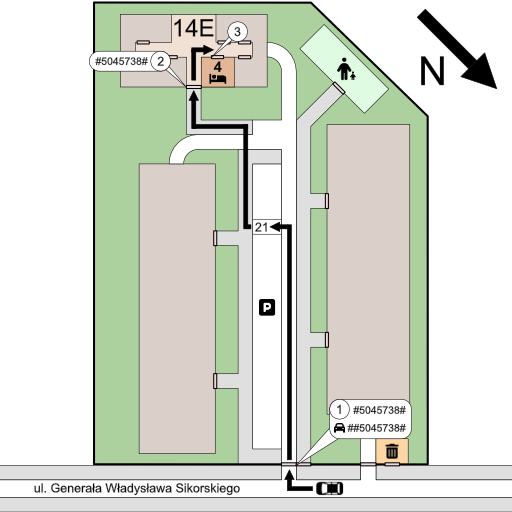

Witamy na naszej instrukcji dotyczącej zameldowania w naszym apartamencie w Oświęcimiu. Wysłaliśmy Ci link do niej, by jak najbardziej komfortowo przeprowadzić Cię przez proces zameldowania. Prosimy proszę o postępowanie z instrukcją krok po kroku.
Mieszkanie znajduje się pod adresem:
32-600 Oświęcim
ul. Generała Władysława Sikorskiego 14E/4
Poniżej umieszczona została mapka z zaznaczoną lokalizacją apartamentu (adres na Google Maps jest niestety nieaktualny).
Dla ułatwienia procesu zameldowania, załączamy mapkę z uproszczoną instrukcją wraz z opisem.
1. Do wejścia na teren apartamentu mamy dwie opcje:
- Za pomocą bramki dla pieszych (kod: #5045738#)
- Za pomocą bramy dla samochodów (kod: ##5045738#)*
* W przypadku wjazdu samochodem, do mieszkania przypisane jest miejsce parkingowe numer 21
2. Do wejścia do budynku używamu tego samego kodu co do bramki (kod: 5045738#)
3. Kod do klamki od mieszkania wysyłany jest osobną wiadomością w momencie gdy mieszkanie jest już gotowe do zameldowania.